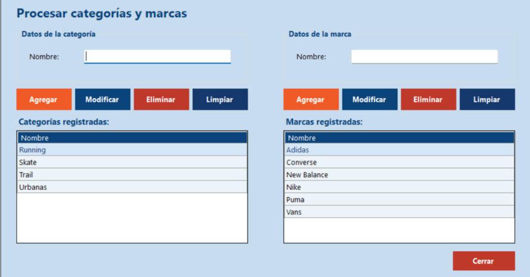

Inicio › Maestro › Procesar categorías y marcas
Procesar categorías y marcas
Antes de cargar un producto tienen que existir su marca y su categoría. En esta pantalla se mantienen ambas listas: la categoría a la izquierda y la marca a la derecha, con los mismos botones en cada lado.
Dónde está: Maestro › Procesar categorías y marcasLo usa: AdministradorAtajo: F1
Pasá el mouse por encima de cualquier botón o campo de la pantalla para ver qué hace.

Qué hace cada elemento
- 1Nombre de la categoríaEscribí el nombre del tipo de calzado, por ejemplo Running. Admite letras, números, espacios y los signos . & ' - hasta 50 caracteres.
- 2Agregar categoríaRegistra una categoría nueva con el nombre escrito.
- 3Modificar categoríaCambia el nombre de la categoría elegida en la lista.
- 4Eliminar categoríaBorra la categoría elegida, con confirmación. No se puede si algún producto la usa.
- 5Limpiar categoríaVacía el campo y deja de seleccionar la categoría.
- 6Categorías registradasTodas las categorías existentes. Tocá una para modificarla o eliminarla.
- 7Nombre de la marcaEscribí el nombre de la marca, por ejemplo New Balance. Mismas reglas que la categoría.
- 8Agregar marcaRegistra una marca nueva.
- 9Modificar marcaCambia el nombre de la marca elegida.
- 10Eliminar marcaBorra la marca elegida. No se puede si algún producto la usa.
- 11Limpiar marcaVacía el campo y deja de seleccionar la marca.
- 12Marcas registradasTodas las marcas existentes. Tocá una para modificarla o eliminarla.
- 13CerrarCierra esta pantalla y vuelve al menú principal.
Cómo hacerlo
- Escribí el nombre en el campo del lado que corresponda (categoría a la izquierda, marca a la derecha).
- Tocá Agregar de ese mismo lado.
- Aparece el aviso de éxito y el nombre se suma a la lista.
Tené en cuenta: Si hay un nombre elegido en la lista, el sistema pide tocar Limpiar antes de agregar uno nuevo.
- Tocá el elemento en la lista: su nombre pasa al campo.
- Escribí el nombre correcto.
- Tocá Modificar. El cambio se refleja en todos los productos que lo usan.
- Tocá el elemento en la lista.
- Tocá Eliminar y confirmá.
Tené en cuenta: No se puede eliminar una categoría o marca que tenga productos asociados. Primero hay que cambiar o dar de baja esos productos.
Para saber más
Mensajes que puede mostrar el sistema 9
| Mensaje | Qué significa y qué hacer |
|---|---|
| AvisoIngrese el nombre de la categoría / de la marca. | El campo está vacío. |
| AvisoEl nombre solo admite letras, números, espacios y los signos . & ' - (máximo 50 caracteres) | Quitá símbolos no permitidos o acortá el nombre. |
| AvisoYa existe una categoría / marca con ese nombre | No se repiten nombres. |
| AvisoHay una categoría / marca elegida en la grilla. Presione Limpiar antes de agregar una nueva. | Tocá Limpiar de ese lado y volvé a intentar. |
| AvisoSeleccione una categoría / marca de la grilla para modificar / eliminar. | Elegí primero el elemento en la lista. |
| Confirmación¿Confirma la eliminación de la categoría / marca ...? | Sí elimina, No cancela. |
| AvisoNo se puede eliminar la categoría / marca: tiene productos asociados | Está en uso por algún producto. |
| AvisoLa categoría / marca ya no existe. Actualice la lista y vuelva a intentar | Alguien la eliminó. Volvé a abrir la pantalla. |
| ListoCategoría / Marca registrada, modificada o eliminada correctamente | La operación se guardó. |
Reglas a tener en cuenta 3
- Solo el Administrador puede usar esta pantalla.
- Los nombres no se repiten dentro de cada lista.
- Las categorías y marcas que cargues aparecen enseguida en los desplegables de Procesar productos.
Temas relacionados
SneakRush · Ayuda del sistema · Procesar categorías y marcas. Podés abrir esta ayuda desde cualquier pantalla con la tecla F1.